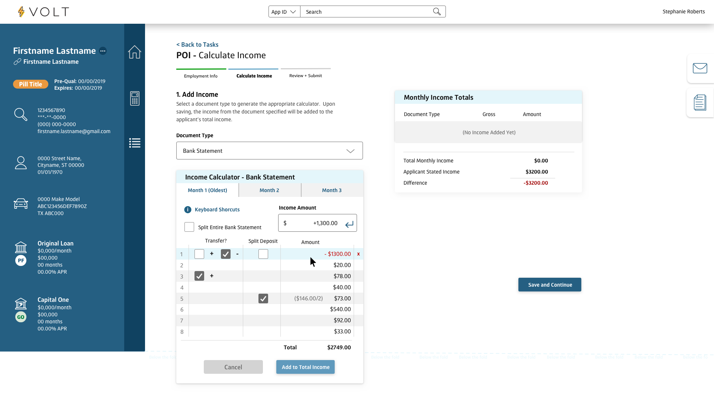

- •
- •
- •
Until the team began building VOLT, Auto Finance employees at Capital One utilized a 20 year old legacy application that was not originally built for Auto Finance use cases. The tools within this application had been hodgepodged together, in addition to 7 other desktop applications (Adobe Viewer, Calculator, Notes App, Excel, etc) in order to enable employees to complete complicated, multi-step tasks like Proof of Income, Proof of Residence, and more. Thousands of Auto Finance employees spent nearly their full day (8+ hours) completing these tasks in order to help qualify customers for auto financing or refinancing. At the time, a complex task like Proof of Income took 3.5 hours on average to complete. Teams were consistently considered “behind” on task completion rates, training new employees was a multi-week ordeal, and turnover was at an all time high.
As the lead designer for VOLT, I was responsible for UX Research, UI / UX Design, Interaction Design, UX QA, and Revision after rollout.
In order to solve the major efficiency issues these employees were faced with on a daily basis, Capital One prioritized the creation of VOLT, a new application specifically designed to guide employees through the completion of simple and complex tasks alike.
Initially, VOLT was only intended to be used for Auto Refinance employees (about 250 customer service agents at the time). Upon investigation, I identified that there were thousands of employees in the Auto Finance department who were using the same legacy tool to complete incredibly similar processes. If we designed the tool with that in mind, both departments could utilize it, and our impact would be exponentially higher.
Onsite at the Capital One Auto Finance HQ in Plano TX, I was able to observe the disastrous, broken process firsthand that employees were having to struggle through using the legacy application. There were sticky notes on desktops, local excel files, chats going back and forth, and a lot of manual entry/copy and paste. The entire process was ripe for human error, which unfortunately means real consequences either for customers looking to purchase/refinance a vehicle, or losses for the organization. The switching back and forth between applications and messiness of a process built out of necessity made it extremely challenging to train new hires. Here are a few direct quotes I heard from employees about the original process:
“Some days it makes me want to quit working here. How is this the real process at such a large institution?”
”If I have to train one more new hire, I might go bald.”
”I just got reprimanded for an error I didn’t have control over. See? I’ll replicate it for you- did you see how it just changed the selection right there? That right there got me in trouble. But I need this other box to say ‘1’, so it changes that one automatically. I showed my manager. She said there’s no way to fix it.”
After spending considerable time observing the legacy process, I realized we’d need a focus group to work with on a regular basis throughout the design process. This wasn’t a problem I’d be able to solve without the help of the folks most familiar with the complex processes we’re designing for. I set up a weekly focus group, with 4 different groups of 5 employees, rotating so each group would meet with me once a month. This ensured a variety of voices and specialties would be able to provide feedback as we made progress.
Before solving for any one specific task, we explored how we might design the infrastructure of this new application, testing different navigation options and identifying views that would be most helpful to employees while they work on an application.
Once we had the greater infrastructure planned out, we identified the task consuming the most employee time was Proof of Income. This also happened to be the task most likely to suffer from human error. Knowing we could free up the most time for employees by designing the workflow for that problem first, we began our work tackling the Proof of Income task.
Knowing we’d be solving for a minimum of 7 different tasks, and wanting to make the process for each task much simpler and easy to train, I wanted to create an interaction pattern we could reuse.
We identified the need for a drawer that would be visible within any application that would initially allow employees to send emails and view documents. For future “secondary” actions, we’d have an appropriate place to put these actions that are often necessary for a variety of tasks. This drawer would pull out from the right side of the page.
Next, we looked at a wizard-style multi step approach for complex tasks, and placed read-only information on the right side of the page, while placing actions on the left side, so if employees are utilizing a secondary action from the drawer on the right, they could complete actions simultaneously on the left.
Now that I had a good idea of some of the reusable patterns we’d utilize throughout VOLT, I got into the specific needs for the Proof of Income task. Employees needed the ability to open full Bank Statement PDFs (as well as a number of other financial documents) and re-enter the contents line item by line item. This had historically been the most time consuming (and error prone) part of the process.
We designed a tool within VOLT that did not require Excel docs, notes apps, copying and pasting into the calculator - employees could view the document side by side while utilizing the custom built Income Calculator to add line items. Even better, we added keyboard shortcuts so employees would never have to take their hands off the keyboard- they could move much faster as they added and subtracted line items from Bank Statements or other documents. This specific part of the process was majorly responsible for the incredible increase in efficiency we saw after the rollout of VOLT. After much refinement with the focus groups I’d created, we had a winning design.

After rollout, we monitored the results to ensure VOLT was working as intended. In the first 6 months after rollout (June 2020-Dec 2020), we saw reduced agent and consumer effort, human error, a much faster turn-around time per loan (up to 30%), and significant savings for Capital One ($6m+ saved in that first 6mo). Employees were THRILLED to have a cleaner, easier to use tool. Customer Service teams made their loan turnaround goals consistently for the first time in over 5 years. Hundreds of new employees were onboarded, and employee turnover was significantly reduced. This solution was hailed throughout the organization as a gamechanger. To this day, this project might just be my favorite I’ve gotten to work on in my career as a User Experience Designer.